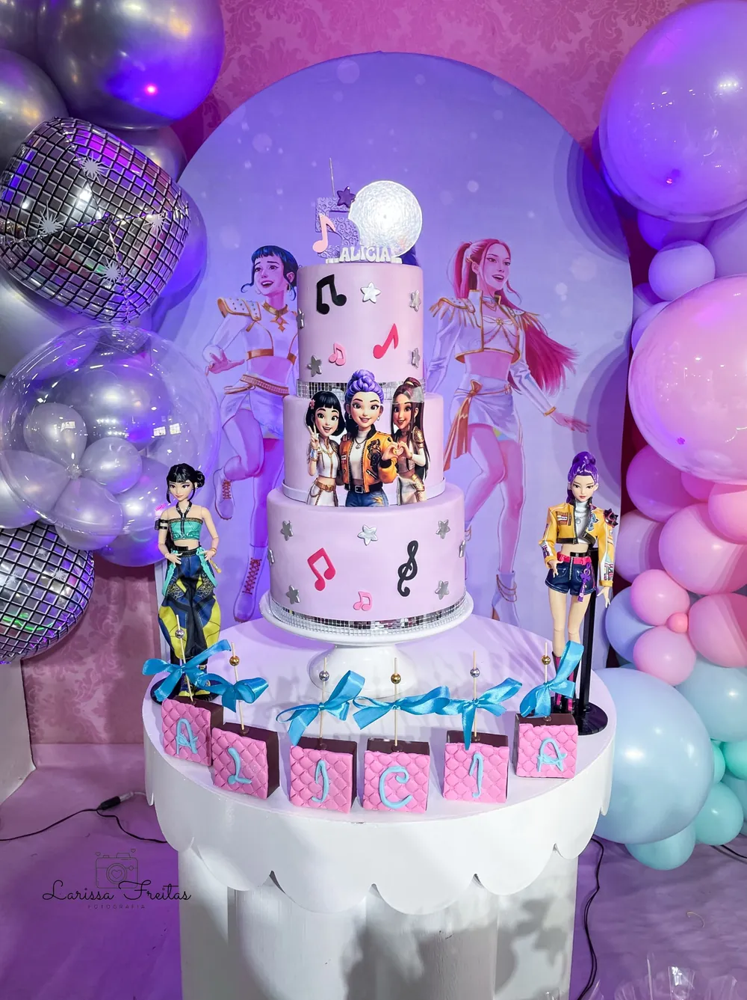
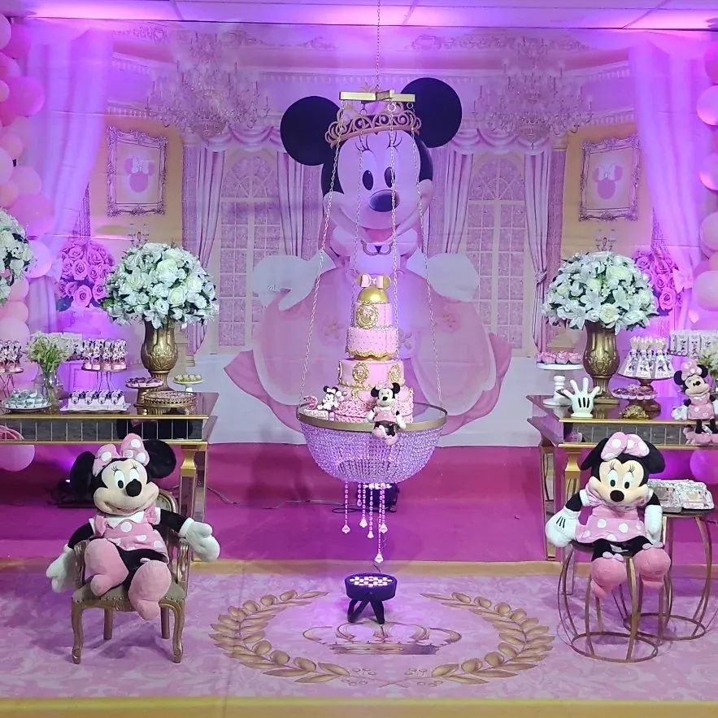
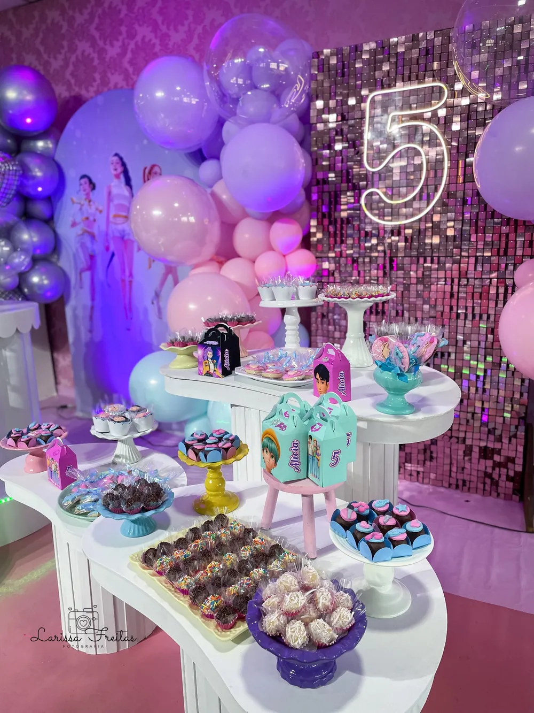

Festas de aniversário
Para celebrar mais um ano de vida com quem você ama.
Casa de festas em Santa Luzia, São Gonçalo
Há mais de 9 anos transformando sonhos em celebrações únicas. Descubra o espaço ideal para comemorar os momentos mais importantes da sua vida.



+9 anos realizando sonhos
Cada comemoração tem uma história especial, e nossa missão é fazer parte dela. Trabalhamos com dedicação para transformar ideias em momentos inesquecíveis, cuidando de cada detalhe para que você aproveite sua celebração ao máximo.
Fale com a genteConte qual é a sua comemoração e montamos o projeto junto com você.
Para celebrar mais um ano de vida com quem você ama.
Temas e decorações pensados para a alegria da criançada.
Uma noite para ficar na memória.
Fale com a equipe sobre a sua data.
Sua ideia, com atenção aos detalhes.
Encontros de família, amigos e equipes.
Um espaço amplo, com equipe especializada e decoração que valoriza cada ocasião, dentro da Galeria do Vidal Shopping.
Decorações e comemorações realizadas aqui. Toque em uma foto para ampliar.
Uma trajetória dedicada a celebrações.
Cada item da festa recebe atenção.
Ambiente voltado a celebrações.
Cada ocasião com o seu cenário.
Sua ideia vira um projeto especial.
Conte para nós como você imagina sua comemoração. Será um prazer ajudar a planejar esse momento especial!
Fale com nossa equipe pelo WhatsApp